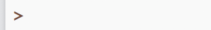
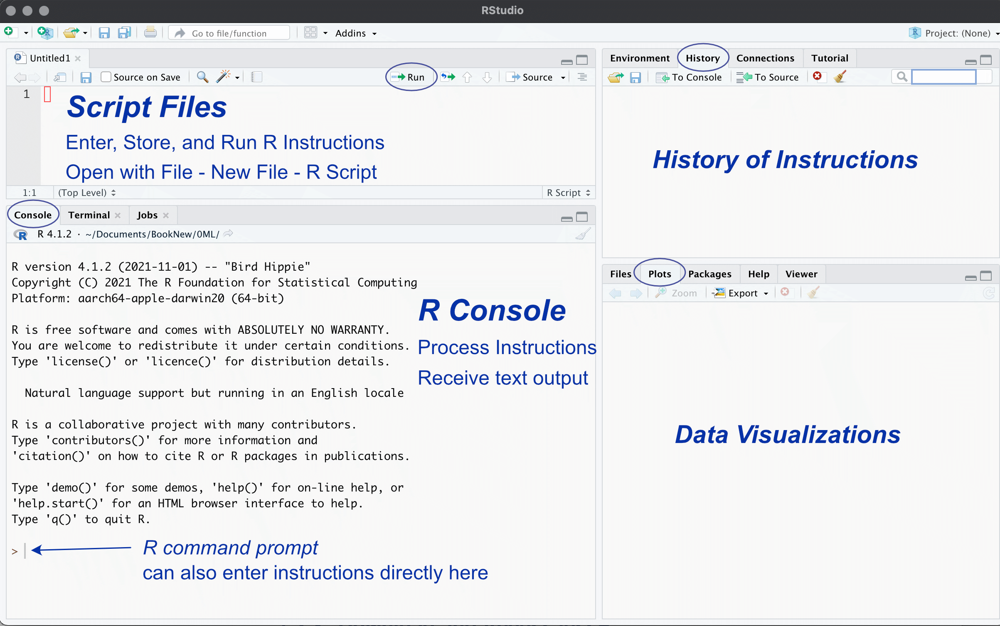
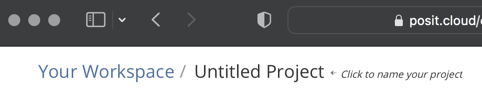
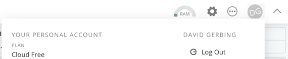

Data analytics is a fast developing, exciting topic of research and application that impacts many areas of our lives. We are today experiencing an authentic knowledge revolution that integrates the statistical analysis of data using computers. Here you are introduced to data analytics. After you spend a few hours learning the basics of the R software system for analytics, the rest is straightforward. From a small investment in learning how the system works, you gain access to much data analytic prowess using one of the primary languages of modern data science.
1.1 Overview
We begin with some basic concepts of data analytics. All data analysis, as in 100%, is done on the computer. We use R (R Core Team 2022) as the app for data analytics, the same analysis system many data scientists use doing real data science throughout the world.
A core set of tasks form part of every analytics project:
- Read the data from a computer file into the analysis system, here R.
- Count the data values recorded for each variable with either a
The following content explains how to access and use R to accomplish these essential tasks. Sequentially follow the provided instructions, from downloading R to your computer or use in the cloud, reading data into R, and then analyzing that data. Besides the provided, self-sufficient written instructions, also find optional referenced videos and reading material. To extend your analytic skills beyond this discussion, reference the article (Gerbing 2021), or the book (Gerbing 2023), for a wide range of data analyses illustrated and explained in detail.
Work through the following content step-by-step. Identify each step as a numbered example. Each step is straightforward. Skipping steps or skimming the content, however, leads to nowhere except confusion.
Get the basics down, and the rest readily follows.
1.1.1 R vs. Excel
Excel and R analyze data with functions. You already know more about using R than you thought you did. Excel implements many built-in functions, plus user-defined functions (which Excel calls macros), and so does R.
Function: Set of instructions to perform the computations that transform data values into results, the output of the analysis.
The input into a data analysis function is data. The output of a function can assume several forms:
- text in the form of writing and tables
- visualizations in a graphics format such as pdf or png
- data transformed from the original input data.
To run an R program is to process the code, a sequence of function calls that perform the analyses.
1.1.1.1 Function Calls

R and Excel differ on how to instruct a function to do its work. To illustrate, consider the following six data values, the annual salaries of six employees at a company. According to the standard organization of data, find the variable name Salary in the first row of the Excel worksheet. The data values follow in the same column under the variable name.
What is the average salary? Compute the average, more technically called the (arithmetic) mean, either with the Excel function average() or with the R function mean(). Both functions provide the same result, but the respective languages name their functions differently.
Function call: Computer instruction to process the computations of a function from within a data analysis system such as Excel or R.
Excel function call. Enter the function call into a cell in the worksheet, sharing the same type of storage area, a worksheet cell, as the data values.
In this example, enter the function call beneath the column of data into the 8th cell in Column A. Specify the data for analysis with a cell range, such as the relative cell range A2:A7. This cell range refers to cells in the same column relative to the cell that contains the function call. This cell range extends from the cell in the second row of Column A to the cell in the seventh row.
R function call. R works differently than a worksheet app. R processes the analysis instructions line-by-line in an area separate from the data, called the R console. Each line is called a command line, which contains a prompt, a >, for entering a command, that is, an R instruction.
Figure 1.1 shows the R prompt for one line in the R console.
Each function has a name, such as Histogram() to display a histogram and related summary statistics such as the mean. The () indicates that the reference is to a function, which is where various values such as a variable name are passed to the function. To call a function for data analysis, in response to the R command prompt, >, enter the function name, a left parenthesis, usually at least one value such as the variable name for which to do the analysis, and then a matching right parenthesis.
The example in Figure 1.2 creates the histogram of variable Salary, as well as summary statistics that include the mean, by calling the Histogram() function for the variable Salary.

Data easily flows from an Excel worksheet into R. To begin this analysis, read the Excel worksheet that includes a variable named Salary into R from a simple instruction you enter at the command line.
That is it. To get the histogram and mean and more of the variable Salary after reading the data into R, at the > prompt enter the function call Histogram(Salary). To analyze the data values for a variable in R, refer to the variable’s name within the parentheses. Be aware of the exact spelling of the variable names, including capitalization, in this case beginning the function reference with an uppercase H.
As with the Excel example, this histogram analysis with R requires no programming. The programming was done by the people who wrote the functions referenced in the analysis. Instead of potentially writing complicated computer code, enter a simple function call to analyze the data. In this example, the R function accomplished much more than the computation of a simple mean. Just getting the histogram with Excel involves much more work.
We have seen that both Excel and R analyze the data values for a variable organized within a column, though with different user interfaces. R, however, presents several advantages.
1.1.2 Advantages of R
Data scientists use R (or similar languages) for their analyses instead of Excel. Some reasons for the preference for R and related languages follow.
- Excel is great for data entry and viewing data as a spreadsheet app, but provides only the most basic statistical computations. Excel is not a serious app for data analysis.
-
Once the concept of working with R is understood, less work is required to conduct an analysis even directly from Excel data, such as simply entering
Histogram(Salary), than can be obtained with the more cumbersome set of procedures offered by Excel. - R does Big Data, efficiently handling data sets with millions of rows of data, limited only by the computer’s available memory.
- R separates the instructions for the analysis of data from the data. This separation makes debugging errors much more straightforward than Excel files that can include multiple, linked worksheets that can more easily hide errors.
- Obtain each R analysis with one or more instructions, function calls, that can be saved for future use instead of irrecoverable mouse clicks. The results of R analyses are reproducible.
The multiple instructions to perform an R analysis precisely document how to conduct the analysis. As shown later, save these instructions in a file for later use to repeat the analysis.
Reproducibility: Analyses can be re-run in the future to reproduce previously obtained results.
The analyst typically does not enter code directly into R. Instead, write the R instructions into a file, able to retrieve and re-run the instructions at any time. Saving the R code allows for reproducible analysis. The instructions for analyses done by one person become accessible to all members of your organization with access to the file, including yourself, at any subsequent point in time. On the contrary, those Excel mouse clicks vanish into digital dust.
As I wrote in the Journal of Statistics and Data Science Education (Gerbing 2021):
Countless overly complex Excel worksheets that model business processes are horrendous to debug and understand in their complexity. Let the (moderate size) data reside within Excel, but use R or similar language to write your code that manipulates and analyzes your data. If needed, export the results of your specified computations back to Excel. R writes data to Excel files as easily as it reads data from Excel worksheets.
Separate your data from your code to process that data. Data analysis programming languages such as R provide that separation. In my opinion, Excel is vastly overused to the extent that it becomes a detriment to many business operations. Welcome, instead, to the world of data science.
1.1.3 RStudio
Most analysts who use R run R from within an eb called RStudio because of the additional features that RStudio provides. From RStudio, you are running R at the standard R command line from what is called the R console, but within the RStudio environment.
As shown in Figure 1.3, the RStudio window consists of several resizable window panes. The primary window pane is the standard R console, the same console available from running R by itself. The bottom-right window pane with the Plots tab is where RStudio directs the data visualizations and can also display other information such as your file directory. The top-right window pane displays information such as your History of entered R instructions.

R processes all instructions at the command prompt in the R console window pane. One option directly enters the instructions at the command prompt. The short-coming of this approach is that the instructions must be reentered every time the analysis is re-run. To provide for reproducibility from storing R code, add a fourth window pane in the top-left corner, labeled Script Files in Figure 1.3. Create a new R script file with the following menu sequence:
File menu --> New File --> R ScriptEnter R instructions into the script window, select one or more instructions, and press the Run button at the top-right of the window pane. RStudio will copy the selected information to the command prompt and run the instructions as if you had entered them directly into the console. Save the file of R script so that you to provide for reproducing or extending the analysis without having to re-type everything.
1.2 Getting Started
Download and install R on your computer, or run via a web browser in the cloud. The choice is yours. R works the same regardless of the platform. Of course, running in the cloud requires an active Internet connection. With your data and your data processing app on your own computer you maintain a level of independence and security not available with cloud processing, but to run R locally you do need a computing device with more than just a web browser.
Unless you are interested in exploring both venues, there is no need to read the local computer and cloud sections. You can switch between a local computer and the cloud if you wish, but not needed unless you leave home with an iPad or similar device and use your computer at home.
After accessing R on either your computer or the cloud, download and access the lessR extension that adds simplifying data analysis functions to R, making analysis with R more straightforward and accessible.
1.2.1 On Your Computer
Running R on your computer requires to first download the R app to your computer, and, usually the RStudio app as well. Get them both at the same location.
When installing R, choose your operating system from the links at the top of the corresponding web page. For Windows, the top of the resulting web page has the download link. For Mac, several paragraphs down, in the left margin, you have a choice. The first link in the margin is for arm64, the version for the more recently developed Apple M series processors. A second link, further down the margin, applies to Apple’s older Intel CPU computers. If not sure of your CPU type, go to the first choice under the Apple menu, About this Mac, and look at the information for Chip.
If you are asked the question, Install in a personal library? answer y for yes (unless you understand administrative privileges). The installer offers both 32-bit and 64-bit versions. Unless your computer is from around 2012 or earlier, run 64-bit software as you would any other app.
Once R and RStudio are downloaded, their installations proceed as with any app. Accept the given defaults for each step of the process. When installed, run R as you would any other application, such as double-clicking on the application’s icon in your file system display. Usually, however, run the RStudio app, which then automatically connects to and runs R in the RStudio environment.
1.2.2 In the Cloud
From the cloud, access R with a web browser on any computing device, such as a Chromebook or an iPad.
1.2.2.1 The Cloud
The cloud refers to a computer but not the one on your desk or your lap.
The cloud: One or more computer servers, usually in locations unknown to the users, that run applications accessed via a standard web browser.
An important company in the R ecosystem, Posit (formerly RStudio, Inc.), provides a free, though limited, cloud account for running R within the app called RStudio. Access an R cloud account at:
https://posit.cloud/In general, running R in the cloud is the same as running R on your computer, with R and RStudio already pre-installed.
Create a free cloud account at the prompt, which provides 25 free hours per month. The good news is that 25 hours should be plenty of time to complete the assignments in the typical course that does basic data analysis on small to moderate size data sets. However, this time limit is not just the time the computer requires to perform the data analysis computations but also includes the time that a cloud project is open. Wait to log into your account until you are ready to enter the commands needed to do an analysis, and then log out of your account when an analysis is complete. View your account status by clicking on the icon at the top-right with your initials.
Typically not needed, but even paying a small amount for monthly access to R in the cloud can be much cheaper than buying a computer or upgrading to a more powerful computer. Of course, the strategy of off-loading computer processing and storage applies to not just running R, but to many types of data processing. Many companies now maintain and access data bases in the cloud. Many people store not just data files, but photographs, videos and other types of information in the cloud.
1.2.2.2 New project
Organize your analyses by project, maybe one project for all your homework assignments. Each project corresponds to a different data analysis project. To begin, select the New Project drop-down menu, then New RStudio Project, as in Figure 1.4.

Click on the initial project name Untitled Project shown in Figure 1.5 toward the top of the window and type in a new name, HW or something.

The next time you login click on that project name you will access R and RStudio ready for analysis exactly as it was when you last left that project.
1.2.2.3 Upload data to the cloud
Your cloud account provides no direct access to data files on your computer. This lack of computer access makes no difference if reading a file from the web. However, to access a data file that resides on your own computer from your cloud account, first upload the data file. To upload, go the right-bottom window pane of your RStudio session and select the Files tab at the top-left of the window pane. Then select the Upload tab, shown in Figure 1.6.

The Files tab reveals the files in your cloud folder. You will see your data file appear there after uploading.
1.2.2.4 Logout and login
When finished, at the top-right corner of the web page, click your initials and log out, shown in Figure 1.7.

The next time you log in, either select the project you were working on, or create a new one.
1.2.3 lessR Enhancements
1.2.3.1 Ungeek
Standard R is for geeks. R analyses typically involve writing programming code well beyond just a few function calls. I have made R for basic data analysis more straightforward with my 45 or so functions that complement the standard R functions, such as my Histogram() function. These functions, and the more extensive and helpful error diagnostics they provide, result in a more or less “un-geeked” R. The set of these functions are included in the package called lessR, the basis for my article in the Journal of Statistics and Data Science Education, Gerbing (2021), and book, Gerbing (2023).
1.2.3.2 Download and Install
lessR organizes functions into what the R ecosystem refers to as a package. The full R ecosystem, available on servers worldwide, consists of the hundreds of base (standard) R functions included with the installation of R, plus the functions found in additional packages that fulfill a strict set of requirements before published on the R servers. Downloading R installs all the base R functions. Separately download packages such as lessR to access additional functions, all accessed via the standard R environment.
Running R, within RStudio or by itself, on either your computer or in the cloud, one time only, download the lessR package of functions (and associated dependent packages) from the worldwide network of R servers. At the R console command prompt, >, enter the following instruction (function call) into the R console, then press Enter/Return.
Video: install lessR [1:28]
Example 1.1
install.packages("lessR")This installation process involves not only downloading the lessR functions, but also many packages on which lessR depends. The entire process takes some seconds to a minute or so, depending on the speed of your Internet connection.
1.2.3.3 Potential Issues
➝ If asked the following question about compilation, answer no.
Do you want to install from sources the package which
needs compilation? (Yes/no/cancel)
➝ When you install lessR you may get the following warning, which will be misleading for most people who use R.
> install.packages("lessR")
WARNING: Rtools is required to build R packages but is not currently
installed. Please download and install the appropriate version of Rtools
before proceeding:
https://cran.rstudio.com/bin/windows/Rtools/That message is for people who want to work with R at a much deeper level than the typical user. You likely have no desire to ever “build” an R package, which means compile from source R code to a ready-to-run binary Windows, Mac, or Linux/Unix binary. Feel free to ignore the warning as lessR and its dependent packages have already been built for you.
➝ On some occasions, one of the additional packages upon which lessR depends does not get downloaded. Then, when you try to access lessR as shown below, you get a message that lessR cannot be accessed because of a missing package.
The response to that system error is to install the missing package using the same install.packages() function you used to install lessR.
1.2.3.4 Access lessR
Once downloaded, R stores the lessR functions in your R library created for you during the installation process. To access these functions for a specific R session, retrieve them from the library.
Video: library(“lessR”) [1:04]
Example 1.2
library("lessR")Does it work? If the lessR functions successfully load from your R library, the following appears, which includes some instructions for getting started with R and lessR. These instructions include how to read data from files on your computer system into R for analysis and how to access examples of various analyses.
lessR 4.3.0 feedback: gerbing@pdx.edu
--------------------------------------------------------------
> d <- Read("") Read text, Excel, SPSS, SAS, or R data file
d is default data frame, data= in analysis routines optional
Learn about reading, writing, and manipulating data, graphics,
testing means and proportions, regression, factor analysis,
customization, and descriptive statistics from pivot tables.
Enter: browseVignettes(lessR)
View changes in this and recent versions of lessR.
Enter: news(package="lessR")
Interactive data analysis.
Enter: interact()If this information does not appear when you enter library("lessR"), then the lessR package is not properly installed in your R library. Consider running R/RStudio with the free plan in the cloud instead of on your computer.
Occasionally update your R packages. To update, enter:
update.packages(ask=FALSE)
This instruction updates lessR as well as the packages upon which lessR depends, and any other packages you may have installed. Or, if using RStudio, from the Tools menu, you can also select Check for Package Updates....